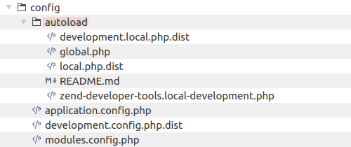

3.8. Configuración de la Aplicación
Muchos de los componentes que usa nuestro sitio web necesitan configuración (afinación). Por ejemplo, en los archivos de configuración definimos las credenciales de conexión a la base de datos, se especifican los módulos de nuestra aplicación y opcionalmente se dan algunos parámetros habituales específicos de nuestra aplicación.
Podemos definir los parámetros de configuración en dos niveles: a nivel de aplicación o a nivel del modulo. En el nivel de aplicación comúnmente definimos parámetros que controlan a toda la aplicación y que son comunes a todos los módulos de la aplicación. A nivel de modulo definimos parámetros que solo tienen efecto en el módulo.
Algunos frameworks de PHP prefieren el concepto de convención sobre configuración, donde muchos de los parámetros están embebidos en el código y no necesitan configuración. Esto hace más rápido el desarrollo de la aplicación, pero la hace menos configurable. En Zend Framework 3 se usa el concepto de convención sobre configuración pero podemos personalizar cualquier aspecto de nuestra aplicación, para esto tenemos que invertir algún tiempo en aprender como hacerlo.
3.8.1. Archivos de Configuración a Nivel de Aplicación
La subcarpeta APP_DIR/config los archivos de configuración de toda la aplicación. Miremos en detalle esta subcarpea (figura 3.4).
 Figure 3.4. Configuration files
El archivo APP_DIR/config/application.config.php es el archivo de configuración principal. Es usado por la aplicación al arrancar para determinar que módulos de la aplicación deben ser cargados y cuales servicios crear por defecto.
Abajo presentamos el contenido del archivo application.config.php. Como podemos ver el archivo de configuración es solo un arreglo asociado y anidado de PHP, cada componente tendrá una llave específica en el arreglo. Podemos dejar comentarios de una linea en las llaves para hacer más fácil que otros entiendan lo que cada llave significa.
Por convención los nombres de las llaves deben estar en minúsculas y si el nombre de la llave tiene varias palabras, las palabras deben ir separadas por un símbolo piso ('_').
return [
// Retrieve list of modules used in this application.
'modules' => require __DIR__ . '/modules.config.php',
// These are various options for the listeners attached to the ModuleManager
'module_listener_options' => [
// This should be an array of paths in which modules reside.
// If a string key is provided, the listener will consider that a module
// namespace, the value of that key the specific path to that module's
// Module class.
'module_paths' => [
'./module',
'./vendor',
],
// An array of paths from which to glob configuration files after
// modules are loaded. These effectively override configuration
// provided by modules themselves. Paths may use GLOB_BRACE notation.
'config_glob_paths' => [
realpath(__DIR__) . '/autoload/{{,*.}global,{,*.}local}.php',
],
// Whether or not to enable a configuration cache.
// If enabled, the merged configuration will be cached and used in
// subsequent requests.
'config_cache_enabled' => true,
// The key used to create the configuration cache file name.
'config_cache_key' => 'application.config.cache',
// Whether or not to enable a module class map cache.
// If enabled, creates a module class map cache which will be used
// by in future requests, to reduce the autoloading process.
'module_map_cache_enabled' => true,
// The key used to create the class map cache file name.
'module_map_cache_key' => 'application.module.cache',
// The path in which to cache merged configuration.
'cache_dir' => 'data/cache/',
// Whether or not to enable modules dependency checking.
// Enabled by default, prevents usage of modules that depend on other modules
// that weren't loaded.
// 'check_dependencies' => true,
],
// Used to create an own service manager. May contain one or more child arrays.
//'service_listener_options' => [
// [
// 'service_manager' => $stringServiceManagerName,
// 'config_key' => $stringConfigKey,
// 'interface' => $stringOptionalInterface,
// 'method' => $stringRequiredMethodName,
// ],
// ],
// Initial configuration with which to seed the ServiceManager.
// Should be compatible with Zend\ServiceManager\Config.
// 'service_manager' => [],
];
En la línea 3 tendemos la llave modules que define que módulos serán cargados al arrancar.
Podemos ver que los nombres de los módulos se guardan dentro de otro archivo de configuración
modules.config.php en el que se listan todos los módulos presentes en nuestro
sitio web.
En la línea 11 está la llave module_paths que le dice a ZF3 en que directorios
buscar el código fuente que pertenece a los módulos. Los módulos de aplicación
que desarrollamos se ubican dentro del directorio APP_DIR/module y los módulos
de terceros se ubican dentro del directorio APP_DIR/vendor.
En la línea 19 tenemos la llave config_glob_paths que le dice a ZF3 en donde buscar
archivos de configuración extras. Aquí se ve que los archivos con el sufijo global.php
o local.php del APP_DIR/config/autoload se cargan automáticamente.
En resumen, comúnmente usamos el archivo de configuración principal application.config.php
para guardar información sobre los módulos que deben ser cargados en nuestra aplicación,
donde están ubicados y como se cargan (por ejemplo, aquí podemos controlar las opciones de caché).
Además, en este archivo podemos afinar la configuración del administrador de servicios.
No es recomendable agregar más llaves a este archivo. Para este propósito es mejor
usar el archivo autoload/global.php.
Finalmente vamos a ver el contenido del archivo modules.config.php. Actualmente,
tenemos los siguientes módulos instalados en nuestro sitio web.
return [
'Zend\Session',
'Zend\Mvc\Plugin\Prg',
'Zend\Mvc\Plugin\Identity',
'Zend\Mvc\Plugin\FlashMessenger',
'Zend\Mvc\Plugin\FilePrg',
'Zend\Form',
'Zend\Router',
'Zend\Validator',
'Application',
];
El modulo Application es el modulo que contiene los archivos de nuestra aplicación.
Todos los otros módulos listados son componentes de Zend Framework.
En ZF3 se introdujo un complemento especial de Composer llamado instalador de componentes. Si recordamos, en el capítulo Zend Skeleton Application respondimos varias preguntas con yes o no sobre la instalación con lo que determinamos que componentes instalar. El instalador inyecta estos módulos de componentes en el archivo
modules.config.php.
3.8.2. Archivos de Configuración a Nivel de la Aplicación
Los archivos de configuración "extra" APP_DIR/config/autoload/global.php y APP_DIR/config/autolocal.php definen respectivamente parámetros dependientes del entorno e independientes del entorno para toda la aplicación. Estos archivos de configuración se cargan automáticamente y se mezclan recursivamente con los archivos de configuración dados por el módulo, esta es la razón de que este directorio se llame autoload.
Teniendo diferentes archivos de configuración en el directorio APP_DIR/config/autoload puede ser confuso saber que parámetros deben ser colocados en cada uno. Aquí hay algunos consejos:
Usamos el archivo autoload/global.php para guardar parámetros que no dependen de un entorno de maquina concreto. Por ejemplo, aquí podemos guardar parámetros que sobrescriben parámetros por defecto de algún módulo. Aquí no guardamos información sensible (como credenciales de base de datos), para ese propósito es mejor usar el archivo autoload/local.php.
Usamos el archivo autoload/local.php para guardar parámetros específicos de un entorno concreto. Por ejemplo, aquí podemos guardar las credenciales de la base de datos. Usualmente cada desarrollador tiene una base de datos local cuando desarrolla y prueba el sitio web. Entonces, el desarrollador editará el archivo local.php y colocará sus propias credenciales. Cuando instalamos nuestro sitio en el servidor de producción, editaremos el archivo
local.phpy colocaremos las credenciales para la base de datos de producción.
El archivo autoload/local.php contiene parámetros específicos para un entorno, en el sistema de control de versiones almacenaremos la plantilla de distribución local.php.dist. Cada desarrollador del equipo renombra el archivo local.php.dist a local.php y coloca sus propios parámetros. El archivo local.php no debe ser guardado en el control de versiones porque puede contener información sensible como credenciales de base de datos (usuario y contraseña) y no deseamos que otras personas lo vean.
3.8.3. Archivo de Configuración a Nivel de Aplicación
El archivo de configuración a nivel de aplicación (APP_DIR/config/development.config.php)
está presente solo cuando activamos el modo de desarrollo. Si recordamos, nosotros
habilitamos el modo de desarrollo al principio en el capítulo Zend Skeleton Application.
Activamos el modo de desarrollo con el siguiente comando:
php composer.phar development-anable
El archivo development.config.php se mezcla con el archivo principal application.config.php.
Esto permite sobrescribir algunos parámetros. Por ejemplo, podemos:
- Desactivar la configuración de caché. Cuando desarrollamos el sitio web frecuentemente modificamos los archivos de configuración por lo que la configuración de caché puede tener consecuencias indeseables como impedir que veamos el resultado de nuestros cambios inmediatamente.
- Cargar módulos adicionales. Por ejemplo, podemos cargar el módulo ZendDeveloperTools solo en el entorno de desarrollo.
Si desactivamos el módulo de desarrollo, el archivo development.config.php se
removerá. Así que no deberíamos guardar este archivo en el control de versiones.
En su lugar, guardamos en el control de versiones la versión de "distribución"
development.config.php.dist.
3.8.4. Archivos de Configuración Extra de Desarrollo a Nivel de Aplicación
El archivo de configuración extra de desarrollo a nivel de aplicación
(APP_DIR/config/autoload/development.local.php) está presente solo cuando
activamos el modo de desarrollo.
El archivo development.local.php se mezcla con otros archivos de configuración a
nivel de módulo. Esto permite sobrescribir algunos parámetros específicos usados
solamente en el entorno de desarrollo.
Si desactivamos el modo de desarrollo el archivo development.local.php será removido.
Por esta razón no deberíamos guardar este archivo en el control de versiones. En su lugar,
guardaremos la versión de distribución development.local.php.dist en el control
versiones.
3.8.5. Archivos de Configuración a Nivel de Módulo
En la figura 3.4 podemos ver que el modulo Application que viene con nuestra aplicación
tiene el archivo module.config.php en el que colocamos los parámetros específicos del
módulo. Vamos a ver como es el archivo module.config.php del módulo Application:
<?php
namespace Application;
use Zend\Router\Http\Literal;
use Zend\Router\Http\Segment;
use Zend\ServiceManager\Factory\InvokableFactory;
return [
'router' => [
'routes' => [
'home' => [
'type' => Literal::class,
'options' => [
'route' => '/',
'defaults' => [
'controller' => Controller\IndexController::class,
'action' => 'index',
],
],
],
'application' => [
'type' => Segment::class,
'options' => [
'route' => '/application[/:action]',
'defaults' => [
'controller' => Controller\IndexController::class,
'action' => 'index',
],
],
],
],
],
'controllers' => [
'factories' => [
Controller\IndexController::class => InvokableFactory::class,
],
],
'view_manager' => [
'display_not_found_reason' => true,
'display_exceptions' => true,
'doctype' => 'HTML5',
'not_found_template' => 'error/404',
'exception_template' => 'error/index',
'template_map' => [
'layout/layout' => __DIR__ . '/../view/layout/layout.phtml',
'application/index/index' => __DIR__ . '/../view/application/index/index.phtml',
'error/404' => __DIR__ . '/../view/error/404.phtml',
'error/index' => __DIR__ . '/../view/error/index.phtml',
],
'template_path_stack' => [
__DIR__ . '/../view',
],
],
];
En este archivo registramos los controladores del módulo, colocamos información sobre las reglas de routing para las URL que se comparan con nuestros controladores, registramos los complementos de controlador y también registramos las plantillas de vista y los helpers de vista (aprenderemos más sobre estos términos en su capítulo y en los siguientes capítulos).
3.8.6. Combinando los Archivos de Configuración
Cuando una aplicación se crea, los archivos de configuración provistos por el módulo y los archivos de configuración extra del directorio APP_DIR/config/autoload se mezclan dentro de un gran arreglo anidado y de esta manera cada parámetro de configuración comienza a estar disponible en cualquier parte del sitio web. Por esta razón podemos sobrescribir desde el módulo algunos parámetros específicos.
Nosotros también podríamos haber visto la "combinación" de archivos de configuración cuando instalamos PHP, existe el archivo principal php.ini y otros archivos de configuración que se incluyen dentro de uno principal. Cada separación hace que la configuración de la aplicación sea granular y flexible, porque no tenemos que colocar todos los parámetros en un solo archivo y editarlo cada vez que necesitemos cambiar algo.
Los archivos de configuración son cargados en el siguiente orden:
El archivo application.config.php es cargado primero. Es usado para inicializar el administrador de servicios y cargar los módulos de la aplicación. Los datos cargados desde este archivo de configuración se almacenan solos y no se mezclan con otros archivos de configuración.
Los archivos de configuración para cada módulo de la aplicación se cargan y se mezclan. Los módulos son cargados en el mismo orden en que son listados en el archivo application.config.php. Si dos módulos, intencionalmente o por error, guardan parámetros en llaves con nombres iguales estos parámetros serán sobrescritos.
Los archivos de configuración extra de la carpeta APP_DIR/config/autoload se cargan y mezclan dentro de un solo arreglo. Luego, este arreglo se mezcla con el arreglo de configuración del modulo producido en el paso anterior, cuando se carga la configuración del módulo. La configuración general de la aplicación tiene una prioridad más alta que la configuración del módulo, así que podemos sobrescribir los llaves del módulo si lo deseamos.